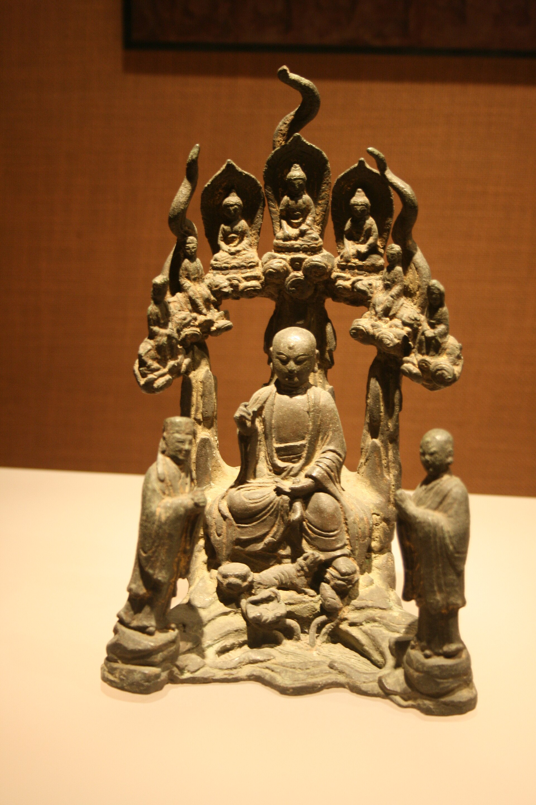
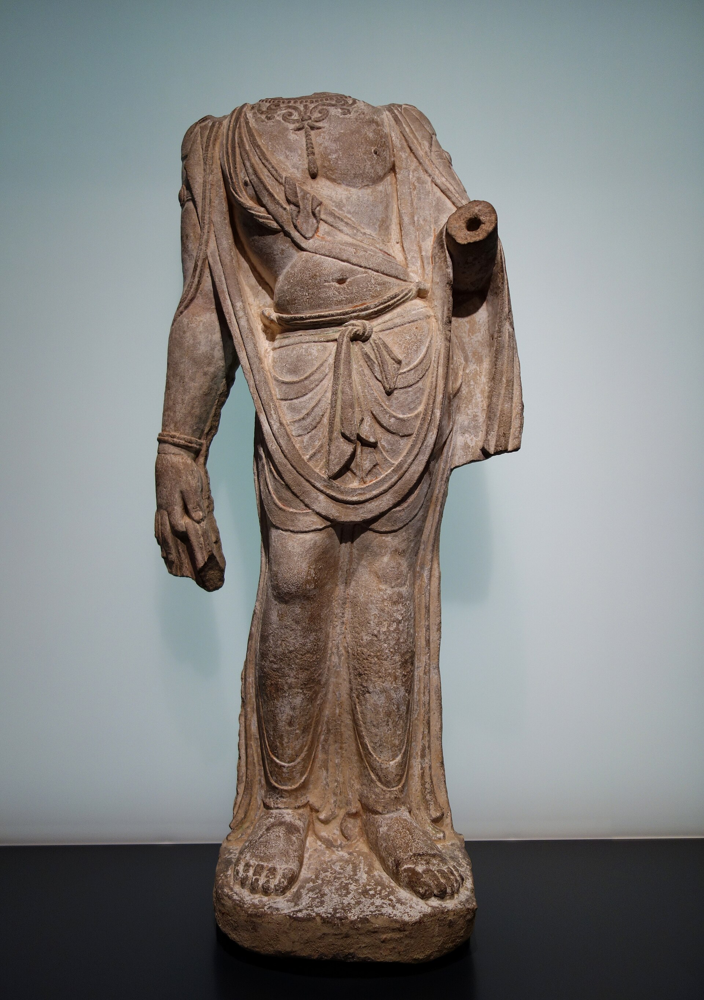

第 25 章
残件的荣光
俯瞰整个展厅，从高耸的穹顶到光滑的地面，视线最终落向亚洲艺术展区深处的一隅。在那里，一尊无头的菩萨立像静立于低矮的灰色石台之上。灯光斜洒，为砂岩表面蒙上一层温润光泽。躯干微转，右胯送出，左膝微屈，衣纹从肩部垂落，绕过腰际，在膝处堆叠出细密褶皱，流向那已不存在的脚踝——断口在距展台三厘米处戛然而止，颜色略浅，如一块旧伤疤。观众环绕着它，或站定歪头揣摩，或蹲下平视衣纹，或后退几步，将展台、灯光与深灰墙壁一并框入手机。无人言语，唯有空调低鸣与远处脚步。一旁的说明牌上印着：菩萨立像，中国，山西省，天龙山石窟，唐代，八世纪，砂岩。
“已佚”。这个词在英文说明牌上的对应词是“lost”。不是“removed”，不是“cut off”，不是“hacked away”。是“lost”——丢失了，不见了，好像头部和双臂只是某次搬运中不慎滑落的零件，好像没有人知道它们是怎么没的。说明牌没有提盗凿，没有提1920年代天龙山石窟遭遇的那场系统性的洗劫，没有提山中商会的代理人如何雇人用锯子和凿子把造像从洞窟墙壁上割下来。这些信息不在说明牌的职责范围内。说明牌的任务是帮助观众理解他们眼前看到的这件东西——它的年代，它的风格，它的美学价值。至于它为什么站在纽约而不是天龙山，为什么没有头，为什么双臂的断口如此整齐——这些问题的答案，属于另一套叙事，另一块说明牌，或者根本不属于任何一块说明牌。
这种信息的分配，本身就是一种选择。而选择，从来不是中性的。二十世纪初，当这些造像残件开始大量流入欧美市场时，它们的残缺被视为一种遗憾。
卢芹斋在1915年的一封商业信函中，用“可惜”来形容一尊天龙山菩萨像的断臂。他的客户——一位芝加哥的实业家——在回信中也用了“unfortunate”这个词。两人都同意，如果造像完整，价格至少可以翻三倍。那个时代，残缺仍然是一种缺陷。它降低了文物的市场价值，也降低了它在收藏家客厅里的展示效果。没有人会把一尊无头无臂的石像放在壁炉上方，正对着客人的视线。那样的位置，留给完整的瓷器、完整的青铜器、完整的油画。残件通常被安置在角落里，或者干脆被锁进储藏室。
变化发生在两次世界大战之间。1930年代，欧美博物馆界开始出现一种新的展示理念。这种理念的来源复杂——有来自现代主义雕塑实践的影响，有来自艺术史学科内部方法论的转变，也有来自博物馆自身空间逻辑的驱动。但它的核心主张很简单：一件雕塑的价值，不在于它是否完整，而在于它的形式是否具有表现力。罗丹的《行走的人》没有头，没有双臂，但它比许多完整的雕塑更有力量。
既然西方现代雕塑可以从残缺中提取美感，为什么中国佛教造像的残件不可以？这个问题一旦被提出，答案就几乎是注定的。因为提问的方式已经预设了评判的标准——“形式”“表现力”“美感”——这些词汇属于同一套批评语汇，这套语汇在二十世纪上半叶的欧美艺术界占据着统治地位。它不问一件作品原本的功能是什么，不问它在原有语境中的意义是什么，不问它为什么残缺。它只问：你看到了什么？线条如何流动？体积如何组织？空间如何被占据和被留白？
用这套标准来衡量天龙山的菩萨躯干，答案是明确的。那尊无头的菩萨，腰部的扭转比许多完整的唐代造像更加生动。衣纹从肩部滑落的弧线，在砂岩表面留下了丰富的明暗变化。断裂的双臂虽然截去了手势，却让观者的注意力更集中于躯干本身的动态。
残缺——从这个角度看——不是损失，而是聚焦。它去掉了一切分散注意力的元素，把形式本身推到了前台。1948年，大都会博物馆的策展人在重新布置中国艺术展厅时，特意将那尊菩萨躯干从靠墙的位置移到了展厅中央。
新的展台比旧的低了十五厘米，让观众的视线可以俯视造像的肩部断面。灯光也做了调整——旧的布光方式是均匀照明，新的方式是从左上方打一束主光，让衣纹的褶皱投下清晰的阴影。
策展人在内部备忘录中写道：“这尊像的雕塑品质，在独立展示时得到了最好的呈现。”他用了“雕塑品质”（sculptural quality）这个词。不是“宗教品质”，不是“历史品质”，不是“文化品质”。是“雕塑品质”。这个词界定了观众应该从哪个角度进入这件作品。它是一尊雕塑，不是一件圣物，不是一处建筑构件，不是一段历史的物证。它是一尊雕塑。而雕塑，是可以独立存在的。
这次重新布置，标志着残件审美化进程中的一个关键节点。从此以后，残件不再被当作“不完整的文物”来展示。它们被当作“完整的雕塑”来展示。残缺不是它们与完整造像之间的差距，而是它们自身的特征——就像一幅画的尺寸，一件瓷器的釉色，一种与生俱来的属性。博物馆的空间设计、灯光设计和文字说明，共同完成了这个身份的转换。
观众走进展厅，看到的不是“一尊失去了头部的菩萨”，而是“一尊无头菩萨立像”。“无头”从定语变成了形容词，从损失变成了描述。

这种转换的深层逻辑，在二十世纪下半叶的艺术史写作中得到了进一步的理论化。一九六〇至七〇年代，几位研究中国佛教雕塑的西方学者，在其著作中发展出一套关于“残件之美”的系统论述。
他们并非不知道这些造像是如何变残的。他们的著作中有时会提到“盗凿”“切割”“流失”等字眼，但这些字眼通常出现在序言或注释里，不进入正文的核心论证。正文的核心论证围绕着风格、形式和审美展开。一尊天龙山的菩萨躯干，被放在北齐到唐代的风格演变序列中加以分析。它的衣纹处理，被追溯到印度笈多王朝的影响。它的身体比例，被拿来与敦煌莫高窟同期的彩塑进行比较。这些分析都是专业的、严谨的、有洞见的。
但它们共同构成了一个封闭的阐释循环：残件被当作艺术品来研究，研究的结果证明它确实具有艺术价值，艺术价值又反过来为它作为艺术品的地位提供了合法性。

在这个循环里，原境缺席了。天龙山缺席了。盗凿的凿痕——那些在砂岩断口上仍然清晰可见的金属工具痕迹——缺席了。
修复伦理的转变，为这个循环提供了技术支持。二十世纪后期，欧美博物馆普遍采纳了“最小干预”原则。这原则的初衷是纠正十九世纪修复实践中常见的过度干预——那些修复师常常根据自己的想象补全缺失的部分，把一件残破的文物“修复”成一种从未存在过的完整状态。最小干预原则要求修复师尊重文物的“现状”，保留所有历史痕迹，包括断裂、磨损和残缺。它的核心信条是：修复的目的不是让文物看起来像新的一样，而是阻止它进一步损坏。这个原则在理论上是无可辩驳的。它保护了文物的真实性，避免了主观臆测造成的不可逆损害。
但在实践中，它也产生了一个意料之外的副作用：它把残缺“合法化”了。当修复师决定“稳定现状”而非“复原原貌”时，他实际上是在宣告：这件文物的当前状态——包括它的残缺——是值得保存的。残缺不再是需要被纠正的问题，而是文物“生命史”的一部分。
断裂面不是损伤，而是“时间铭刻”。凿痕不是暴力的证据，而是“历史层次”。1990年代，大都会博物馆的修复部门对那尊天龙山菩萨躯干进行了一次全面的状况评估。修复师用显微镜检查了石质表面，用X射线探测了内部结构，用化学试剂分析了残留的颜料痕迹。评估报告长达四十页，详细记录了每一处裂纹、每一块剥落、每一片污渍。报告的结论是：造像的整体状况稳定，不需要进行结构性修复。断臂和断颈处的石质已经自然氧化，形成了一层与周围颜色相近的包浆，不建议进行任何填补或遮盖。
这份报告是专业精神的典范。它严谨、细致、尊重文物的物质性。但它也无意中封存了一段暴力。那些断口上的凿痕——当年盗凿者留下的工具痕迹——在报告中被称为“机械损伤”，被归类为“历史磨损”的一部分。修复师不是历史学家，他的职责不是判断这些痕迹的来源，而是评估它们对文物结构的影响。但在修复报告进入博物馆档案之后，这些痕迹就被“技术性地”消化了。
它们成为文物“状况”的一部分，成为“包浆”的一部分，成为“时间铭刻”的一部分。后来的观众看到那些断口时，不会想到狐尾锯和凿子，不会想到1920年代天龙山的某个夜晚，不会想到那些被锯断的石屑落在洞窟地面的声音。他们只会看到“岁月的痕迹”。
这正是残件审美化最精妙也最令人不安的地方。它把暴力的后果，转化为审美的对象。它把人为的断裂，转化为自然的沧桑。它把一段具体的、可追溯的、有责任人的破坏史，转化为一种抽象的、普遍的、无主体的“时间流逝”。在这个过程中，文物所遭受的伤害没有被否认，而是被“升华”了——就像十八世纪欧洲浪漫主义诗歌把废墟升华为“如画”的风景一样。残件成为“如画的碎片”，它的残缺不再是需要追究的责任，而是值得品味的韵味。
拍卖市场对这种韵味的定价，来得比博物馆更直接。2000年代初，国际拍卖市场上出现了一尊北齐时期的菩萨立像残躯，没有头部，双臂从肩膀以下断裂，膝盖以下的部分也已缺失。拍前估价在八十万到一百二十万美元之间。
最终的成交价超过了三百万。拍卖行的专家在拍品描述中写道：“这尊北齐菩萨像虽然历经沧桑，但其雕塑品质丝毫未减。腰部的微妙扭转、衣纹的流畅韵律、砂岩表面在光线下的温润质感，使其成为一件超越时空的艺术杰作。”接下来是一段关于北齐雕塑风格的艺术史分析，引用了三位学者的著作，比较了同时期的几件博物馆藏品。全文没有提到“盗凿”，没有提到“流失”，没有提到这尊造像是在什么情况下离开中国的。拍品的来源信息只追溯到“1950年代入藏欧洲私人收藏”，之前的记录是空白。
这种空白的处理方式是拍卖行业的惯例。来源信息的缺失，在法律上意味着“无争议”——没有人能够证明这件文物是被非法盗运出境的，因此交易可以合法进行。在审美上，来源的空白反而增添了一层神秘感。收藏家可以想象这尊造像在进入欧洲收藏之前的漫长旅程——它经历了什么？它如何在战乱中幸存？它经过了多少人的手？这些没有答案的问题，成为“韵味”的一部分。残缺加上神秘，构成了一种强有力的市场吸引力。
一位欧洲收藏家在竞得这尊北齐菩萨残躯后接受了一家艺术杂志的采访。他说，他收藏中国佛教造像已经有二十多年，最初只收完整的，后来逐渐转向残件。完整的造像，他说，有时会让人觉得“太完美了”——所有的信息都摆在表面，没有留白，没有想象的空间。残件不一样。“它让你参与进来。你的眼睛会自动去完成那些缺失的线条。这个过程非常迷人。”他顿了顿，补充道，“当然，我不是说我希望这些造像被破坏。但事实是，它们已经被破坏了。我们只能从现有的状态中去发现美。”
这段话诚实得近乎残酷。它清晰地表达了残件审美化背后的心理机制：观者的想象力被残缺激活，在“补全”的过程中获得了一种创造性的愉悦。这种愉悦是真实的，是许多人在博物馆和拍卖预展中都有过的体验。
但它也暴露了一个尴尬的事实：这种愉悦的前提，是暴力。如果没有盗凿，没有切割，没有那些被锯断的手臂和头颅，就不会有这种“留白”，不会有这种“想象的空间”，不会有这种“参与进来”的快感。残件之美的诞生，以原境之毁为代价。这个代价，在博物馆的展厅里很少被提及。观众被鼓励去欣赏残件本身，而不是去思考它为什么是残的。展品的文字说明用“已佚”来替代“被盗”，用“历经沧桑”来替代“被切割”，用“历史痕迹”来替代“工具凿痕”。
这些措辞的选择，看似只是修辞上的微调，实则构成了一个完整的叙事框架。在这个框架里，残件不是暴力的受害者，而是时间的幸存者。它的价值不在于它失去了什么，而在于它留下了什么。2015年，一位来自天龙山所在地的研究者访问了大都会博物馆。
她站在那尊菩萨躯干前，看了很久。后来她在一次学术会议上提到了这次访问。她说，她去天龙山做过调查。在那座被编号为第二十一窟的洞窟里，她看到了一处空洞——墙壁上一个人形的凹陷，轮廓与这尊菩萨躯干的尺寸完全吻合。她用卷尺量过空洞的高度和宽度，又请大都会方面提供了造像的尺寸数据。两者吻合。
她还拍了一张照片：空洞的内壁上，凿痕仍然清晰。那些凿痕的方向、间距和深度，与造像断口上的痕迹一致。
她说，当她站在纽约的展厅里，面对着那尊被精心照看的菩萨躯干时，她的脑子里同时出现了两个画面。一个是眼前的画面——柔和的灯光，优雅的姿态，观众低声的赞叹。另一个是天龙山那个空洞的画面——裸露的岩石，整齐的凿痕，从洞口漏进来的天光。这两个画面叠在一起，无法分离。
她说这话时，语气很平静。没有愤怒，没有控诉，没有要求归还。她只是在描述一种观看经验——一种无法被“残件之美”完全容纳的观看经验。在这种经验里，残件不是独立的艺术品，而是一个空洞的对等物。
它的美，与那个空洞的丑，是一体两面的。你不能只看这一面，而假装那一面不存在。
这种观看经验，在既有的博物馆叙事里找不到位置。博物馆的叙事是自足的：一件展品，一盏灯，一段文字说明，构成一个完整的审美单元。观众在这个单元里，可以完成一次圆满的观看——了解年代，欣赏形式，感受韵味，然后走向下一个展柜。原境地的空洞不在这个单元里。它在八千公里之外，在另一个国家的另一座山上，在另一个机构的管辖范围内。把它纳入博物馆的叙事，意味着要打破这个自足的单元，把一件展品变成一个更大故事中的一个片段。这个故事不再是关于艺术和风格，而是关于暴力和分离。这不是博物馆习惯讲述的故事类型。
数字技术的介入，为这种单一叙事提供了突破的可能，却也带来了新的纠结。2010年代后期，芝加哥大学的一个数字艺术史项目对天龙山石窟进行了高精度三维扫描。团队用激光扫描仪记录了每一个洞窟的内壁，包括那些被盗凿后留下的空洞。
他们与几家持有天龙山造像的博物馆合作，获取了那些造像的三维数据。在计算机屏幕上，研究者可以将造像的数字模型“放回”空洞中，观察两者之间的吻合程度。结果令人震撼。
一尊菩萨躯干的数字模型，精确地嵌入了第二十一窟墙壁上的凹陷。每一个凿痕的凸起，都对应着凹陷中的凹槽。当模型缓缓滑入空洞时，屏幕上的画面呈现出一种近乎完美的匹配——像两块拼图，分开了一百年，重新找到彼此。项目负责人后来在一次演讲中说，当他第一次看到这个匹配过程时，整个实验室的人都沉默了。
不是因为技术上的成功，而是因为这种匹配本身所承载的东西。它证明了一件事：这些造像不是“佚失”的。它们的位置是已知的。它们的去向是可查的。它们与母窟之间的关联，不是抽象的“文化渊源”，而是具体的、可测量的、毫米级的物理吻合。这个项目没有提出任何追索诉求。它的目标纯粹是学术性的——记录、存档、为未来的研究提供数据。但它的成果本身，就是一种强有力的陈述。
它用数据证明了那些空洞与那些残件之间的一一对应关系，从而把“残件”重新定义为“脱离的部件”。一个“部件”不同于一件“独立的艺术品”。部件意味着它属于一个更大的整体，意味着它的意义不完全在自身，而在于它与整体的关系。数字模型里的那个匹配过程，把博物馆展厅里的“雕塑”重新变成了洞窟墙壁上的“缺失”。
但这种数字重聚也有其自身的局限。它发生在屏幕上，而不是在物理空间里。天龙山的空洞仍然是空洞，大都会的菩萨躯干仍然站在灰色石台上。
数字模型可以展示两者之间的关系，但不能改变两者分离的事实。更微妙的是，数字重聚本身也可能成为一种新的审美化方式。当观众在屏幕上观看那个匹配过程时，他们可能会被技术的魔力所吸引——三维模型如何旋转，数据点如何对齐，颜色如何从灰色变成绿色表示匹配成功。这种技术奇观，有可能成为另一种形式的“韵味”，另一种把暴力转化为景观的方式。
一位数字人文学者在一篇反思性的文章中指出，数字重聚项目面临一个根本性的伦理困境：它试图用技术手段修复一段暴力的历史，但技术本身的中性外观，可能会让这段历史的暴力性变得不那么可见。当你在屏幕上看到一尊造像“回到”它的母窟时，你可能会感到一种满足——好像缺失已经被弥补了，断裂已经被修复了，正义已经被伸张了。但这种满足是虚拟的。
它在现实中没有任何对应物。天龙山的空洞还在。大都会的造像还在纽约。数字重聚没有改变任何法律关系，没有转移任何所有权，没有迫使任何博物馆归还任何藏品。它只是创造了一个新的观看对象——一个比残件更完整、比空洞更美观的观看对象。这个新的观看对象，会不会在无意中消解追索的情感基础？
如果数字重聚已经让“完整”在屏幕上实现了，那么物理归还的紧迫性是否就被稀释了？如果观众可以在网上看到造像与母窟“重聚”的三维动画，那么他们是否就不再关心实物是否真的回到了天龙山？这些问题没有简单的答案。
但它们指向一个更深层的困境：解释权的争夺，不仅在于谁拥有文物，不仅在于谁讲述文物的故事，还在于谁定义什么算是“重聚”，什么算是“修复”，什么算是“公正”。2018年，柏孜克里克千佛洞的抢险加固工程已经完工。崖体被锚杆固定，雨水渗漏的裂缝被灌浆封堵，摇摇欲坠的洞窟前壁被轻型钢结构支撑。工程被评为当年的全国十佳文物保护工程。但在那些被加固过的洞窟里，墙壁上的切割痕迹仍然清晰可见。勒柯克在1905年留下的那些整齐的矩形空白，没有被填补。工程的设计方在方案中明确写道：“对于历史上人为切割造成的壁画缺失，不进行复原性补绘。缺失部分保持现状，作为洞窟历史的一部分予以保留。”
保持现状。这四个字，和纽约大都会博物馆修复报告中的“稳定现状”，是同一个逻辑。它尊重历史，尊重真实性，尊重时间的痕迹。
但它也封存了一段暴力。柏孜克里克的空白墙面，和天龙山的空洞一样，成为“历史的一部分”。它们被保留下来，被记录在案，被纳入文物保护工程的技术档案。但它们没有被修复。没有人试图去填补那些空白，因为没有人知道原本画的是什么。任何填补都是臆测，而臆测是对真实性的背叛。
于是，那些空白就成为了一种永久的在场。它们不是“缺失”——缺失意味着曾经有，现在没有了。它们是“空白”——一种积极的、被刻意保留的虚无。每一个走进洞窟的人，都会看到那些空白。
它们与周围残存的壁画形成鲜明的对比：一边是赭红、石绿、靛蓝交织的佛教世界，一边是土黄色的裸露墙壁，上面布满了整齐的切割网格。这种对比比任何文字说明都更有力。它不需要解释“切割”是什么意思，不需要说明“勒柯克”是谁。它直接展示结果。一位参与工程验收的专家，在走出洞窟后说了一句话。
他说，这些空白，是柏孜克里克最重要的一组“展品”。它们不是被画出来的，而是被切出来的。它们的作者不是古代的画师，而是二十世纪初的探险队。这句话后来在文物保护圈子里流传开来，有人赞同，有人反对。反对者认为，把破坏痕迹称为“展品”，是在赋予破坏者不应有的合法性。赞同者认为，不承认这些空白的“展品”性质，才是对历史的掩盖——它们确实在展示，展示一段无法被抹去的历史。这场争论没有结论。
但它揭示了一个事实：在文物流散的现场，在那些被切割、被凿空、被剥离的墙壁上，审美与暴力从来不是两个可以分开讨论的问题。它们纠缠在一起，互相定义，互相强化，互相消解。残件的荣光，不是一种单纯的审美价值，而是一种充满内在矛盾的文化现象。它既是博物馆对残缺的创造性转化，也是这种转化对暴力历史的无意识遮蔽。它既为流散文物的保存提供了一套合法化的叙事，也为追索诉求的情感基础埋下了消解的种子。
2019年，一位中国艺术史学者在柏林亚洲艺术博物馆的库房里，看到了几块尚未展出的柏孜克里克壁画残片。它们被保存在恒温恒湿的储藏柜里，用无酸纸包裹，编号清晰，状况良好。她戴着白手套，小心翼翼地揭开覆盖在上面的保护层。画面显露出来——一身供养人的侧影，衣纹的线条仍然流畅，面部的金粉仍然隐约闪光。她盯着那个侧影看了很久。
然后她注意到画面的边缘。那是一道整齐的切割线。沿着这道线，壁画被从墙面上剥离。剥离的厚度大约两厘米——一层颜料层，一层细泥层，一层粗泥层，干干净净地离开了背后的岩石。她后来在一篇文章中写道，那道切割线让她想起了手术刀。不是比喻，是真实的联想。
她见过外科手术的切口——干净、精确、沿着预定的线路。勒柯克当年用的工具不是手术刀，是狐尾锯和凿子，但切割的逻辑是一样的：找到脆弱的面，沿着它分离，尽量保持两边的完整。壁画被完整地切下来了，洞窟墙壁上留下了一个同样完整的空白。两样东西都保存得很好。
一个在柏林的库房里，一个在吐鲁番的崖壁上。它们之间的距离，是一百一十四年的时间，和六千公里的空间。她合上保护层，把手套脱下来，在登记表上签了字。储藏柜的门被关上，温湿度计的指针静止不动。空调系统继续低鸣。那些壁画残片重新陷入黑暗中，等待着下一次被调阅。而在吐鲁番，下午的阳光正斜斜地照进洞窟，照亮了墙壁上那些整齐的空白。风从崖壁间穿过，带着沙粒打在岩石上，发出细碎的声响。两种寂静，隔着一百一十四年的距离，互相映照着。